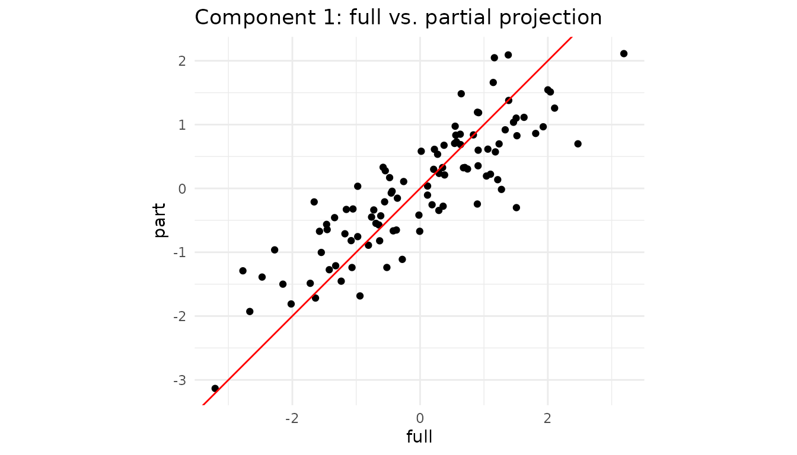
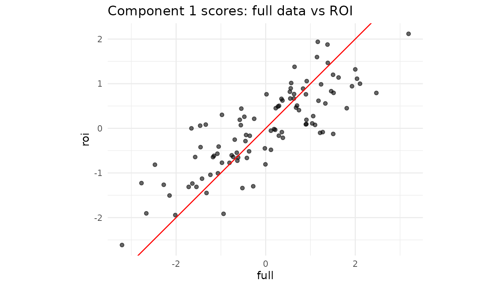

Partial projection: working with incomplete feature sets
Partial_Projection.Rmd1. Why partial projection?
Assume you trained a dimensionality-reduction model (PCA, PLS …) on p variables but, at prediction time,
- one sensor is broken,
- a block of variables is too expensive to measure,
- you need a quick first pass while the “heavy” data arrive later.
You still want the latent scores in the same component space, so downstream models, dashboards, alarms, … keep running.
That’s exactly what
partial_project(model, new_data_subset, colind = which.columns)does:
new_data_subset (n × q) ─► project into latent space (n
× k)
with q ≤ p. If the loading vectors are orthonormal this is a simple dot product; otherwise a ridge-regularised least-squares solve is used.
2. Walk-through with a toy PCA
set.seed(1)
n <- 100
p <- 8
X <- matrix(rnorm(n * p), n, p)
# Fit a centred 3-component PCA (via SVD)
# Manually center the data and create fitted preprocessor
Xc <- scale(X, center = TRUE, scale = FALSE)
svd_res <- svd(Xc, nu = 0, nv = 3)
# Create a fitted centering preprocessor
preproc_fitted <- fit(center(), X)
pca <- bi_projector(
v = svd_res$v,
s = Xc %*% svd_res$v,
sdev = svd_res$d[1:3] / sqrt(n-1), # Correct scaling for sdev
preproc = preproc_fitted
)2.2 Missing two variables ➜ partial projection
Suppose columns 7 and 8 are unavailable for a new batch.
X_miss <- X[, 1:6] # keep only first 6 columns
col_subset <- 1:6 # their positions in the **original** X
scores_part <- partial_project(pca, X_miss, colind = col_subset)
# How close are the results?
plot_df <- tibble(
full = scores_full[,1],
part = scores_part[,1]
)
ggplot(plot_df, aes(full, part)) +
geom_point() +
geom_abline(col = "red") +
coord_equal() +
labs(title = "Component 1: full vs. partial projection") +
theme_minimal()
Even with two variables missing, the ridge LS step recovers latent scores that lie almost on the 1:1 line.
3. Caching the operation with a partial projector
If you expect many rows with the same subset of features, create a specialised projector once and reuse it:
# Assuming partial_projector is available
pca_1to6 <- partial_projector(pca, 1:6) # keeps a reference + cache
# project 1000 new observations that only have the first 6 vars
new_batch <- matrix(rnorm(1000 * 6), 1000, 6)
scores_fast <- project(pca_1to6, new_batch)
dim(scores_fast) # 1000 × 3
#> [1] 1000 3Internally, partial_projector() stores the mapping
v[1:6, ] and a pre-computed inverse, so calls to
project() are as cheap as a matrix multiplication.
4. Block-wise convenience
For multiblock fits (created with
multiblock_projector()), you can instead write
# Assuming mb is a multiblock_projector and data_blockB is the data for block B
# project_block(mb, data_blockB, block = "B") # Or block = 2which is just a wrapper around partial_project() using
the block’s column indices.
5. Not only “missing data”: regions-of-interest & nested designs
Partial projection is handy even when all measurements exist:
- Region of interest (ROI). In neuro-imaging you might have 50,000 voxels but care only about the motor cortex. Projecting just those columns shows how a participant scores within that anatomical region without refitting the whole PCA/PLS.
-
Nested / multi-subject studies. For multi-block PCA
(e.g. “participant × sensor”), you can ask “where would subject i lie if
I looked at block B only?” Simply supply that block to
project_block(). - Feature probes or “what-if” analysis. Engineers often ask “What is the latent position if I vary only temperature and hold everything else blank?” Pass a matrix that contains the chosen variables and zeros elsewhere.
5.1 Mini-demo: projecting an ROI
Assume columns 1–5 (instead of 50 for brevity) of X form
our ROI.
roi_cols <- 1:5 # pretend these are the ROI voxels
X_roi <- X[, roi_cols] # same matrix from Section 2
roi_scores <- partial_project(pca, X_roi, colind = roi_cols)
# Compare component 1 from full vs ROI
df_roi <- tibble(
full = scores_full[,1],
roi = roi_scores[,1]
)
ggplot(df_roi, aes(full, roi)) +
geom_point(alpha = .6) +
geom_abline(col = "red") +
coord_equal() +
labs(title = "Component 1 scores: full data vs ROI") +
theme_minimal()
Interpretation: If the two sets of scores align tightly, the ROI variables are driving this component. A strong deviation would reveal that other variables dominate the global pattern.
5.2 Single-subject positioning in a multiblock design (Conceptual)
# imagine `mb_pca` is a multiblock_biprojector with 2 blocks:
# Block 1 = questionnaire (Q1–Q30)
# Block 2 = reaction-time curves (RT1–RT120)
# Assume data_subject7_block2 contains only the reaction time data for subject 7
# subject_7_scores <- project_block(mb_pca,
# new_data = data_subject7_block2,
# block = 2) # only RT variables
# cat("Subject 7, component scores derived *solely* from reaction times:\n")
# print(round(subject_7_scores, 2))You can now overlay these scores on a map built from all subjects’ global scores to see whether subject 7’s behavioural profile is consistent with their psychometrics, or an outlier when viewed from this angle alone.
6. Cheat-sheet: why you might call
partial_project()
| Scenario | What you pass | Typical call |
|---|---|---|
| Sensor outage / missing features | matrix with observed cols only | partial_project(mod, X_obs, colind = idx) |
| Region of interest (ROI) | ROI columns of the data | partial_project(mod, X[, ROI], ROI) |
| Block-specific latent scores | full block matrix | project_block(mb, blkData, block = b) |
| “What-if”: vary a single variable set | varied cols + zeros elsewhere |
partial_project() with matching
colind
|
The component space stays identical throughout, so downstream analytics, classifiers, or control charts continue to work with no re-training.
Session info
sessionInfo()
#> R version 4.5.2 (2025-10-31)
#> Platform: x86_64-pc-linux-gnu
#> Running under: Ubuntu 24.04.3 LTS
#>
#> Matrix products: default
#> BLAS: /usr/lib/x86_64-linux-gnu/openblas-pthread/libblas.so.3
#> LAPACK: /usr/lib/x86_64-linux-gnu/openblas-pthread/libopenblasp-r0.3.26.so; LAPACK version 3.12.0
#>
#> locale:
#> [1] LC_CTYPE=C.UTF-8 LC_NUMERIC=C LC_TIME=C.UTF-8
#> [4] LC_COLLATE=C.UTF-8 LC_MONETARY=C.UTF-8 LC_MESSAGES=C.UTF-8
#> [7] LC_PAPER=C.UTF-8 LC_NAME=C LC_ADDRESS=C
#> [10] LC_TELEPHONE=C LC_MEASUREMENT=C.UTF-8 LC_IDENTIFICATION=C
#>
#> time zone: UTC
#> tzcode source: system (glibc)
#>
#> attached base packages:
#> [1] stats graphics grDevices utils datasets methods base
#>
#> other attached packages:
#> [1] ggplot2_4.0.0 dplyr_1.1.4 multivarious_0.2.0
#>
#> loaded via a namespace (and not attached):
#> [1] GPArotation_2025.3-1 sass_0.4.10 future_1.67.0
#> [4] generics_0.1.4 shape_1.4.6.1 lattice_0.22-7
#> [7] listenv_0.10.0 digest_0.6.37 magrittr_2.0.4
#> [10] evaluate_1.0.5 grid_4.5.2 RColorBrewer_1.1-3
#> [13] iterators_1.0.14 fastmap_1.2.0 foreach_1.5.2
#> [16] jsonlite_2.0.0 Matrix_1.7-4 glmnet_4.1-10
#> [19] ggrepel_0.9.6 RSpectra_0.16-2 survival_3.8-3
#> [22] scales_1.4.0 pls_2.8-5 codetools_0.2-20
#> [25] textshaping_1.0.4 jquerylib_0.1.4 cli_3.6.5
#> [28] rlang_1.1.6 chk_0.10.0 parallelly_1.45.1
#> [31] future.apply_1.20.0 splines_4.5.2 withr_3.0.2
#> [34] cachem_1.1.0 yaml_2.3.10 tools_4.5.2
#> [37] parallel_4.5.2 corpcor_1.6.10 globals_0.18.0
#> [40] rsvd_1.0.5 assertthat_0.2.1 vctrs_0.6.5
#> [43] R6_2.6.1 lifecycle_1.0.4 fs_1.6.6
#> [46] irlba_2.3.5.1 ragg_1.5.0 pkgconfig_2.0.3
#> [49] desc_1.4.3 pkgdown_2.1.3 pillar_1.11.1
#> [52] bslib_0.9.0 geigen_2.3 gtable_0.3.6
#> [55] glue_1.8.0 Rcpp_1.1.0 systemfonts_1.3.1
#> [58] xfun_0.54 tibble_3.3.0 tidyselect_1.2.1
#> [61] svd_0.5.8 knitr_1.50 farver_2.1.2
#> [64] htmltools_0.5.8.1 labeling_0.4.3 rmarkdown_2.30
#> [67] compiler_4.5.2 S7_0.2.0